Bagged & Tagged - America's Wildest Baggers
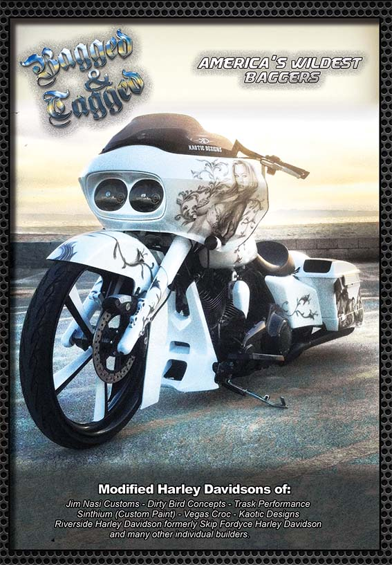
The original film that started it all — an inside look at the builders and riders pushing bagger culture to the edge.
Bagged & Tagged 2 - Ten years on
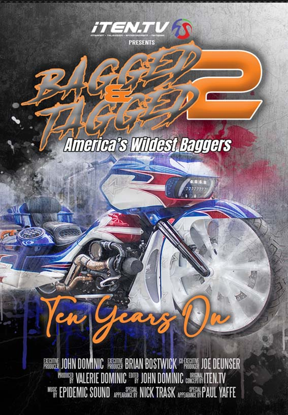
A decade later - revisiting the legends, the builds, and the culture that never slowed down.
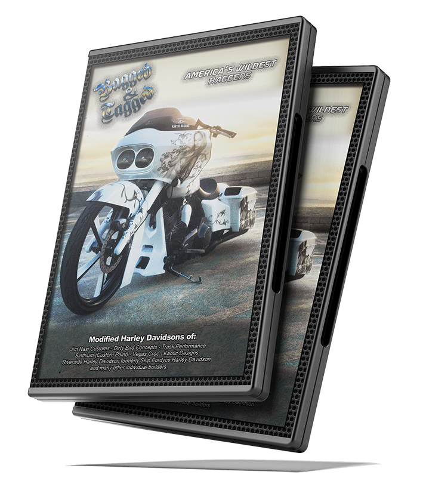
An Original, Easy-To-Watch Documentary
From the studios of iTEN.TV comes our new documentary film, “Bagged & Tagged.” We go on the road to find some of the most radical and modified street-legal Harley Davidson baggers. We visit the bike shows and workshops. We talk with the designers and builders of these wild and insane bikes. Best of all, they're all street legal.
This is not an over-the-top production with script writers, camera cranes, and special FX crews — this is as raw as it gets. We track down the people right there at the shows, on the side of the road, and even at their jobs while they work. A film that relates to everyone with bikes that everyone could own, with answers that come straight from their mouths.
Best of all, you won't see the same stuff you see on TV. Everything you need to know about modifying your bagger is here in this film. The biggest names in the industry: Jim Nasi, Brian Horstman, John Shope, Nick Trask, + many more.
WHAT WE'VE GOT FOR YOU
Some of the talent we feature in this film.
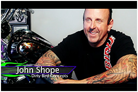
INTERVIEWS
Featuring in-depth interviews with tips, tricks and myths about building a custom bagger - straight from the builders and owners.
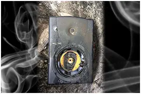
AWESOME SOUND TRACK
A soundtrack built to suit these bikes. Original music from some of the best composers in the gaming industry.
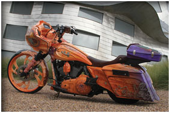
UNIQUE
Watch something unique. This isn't some ol' bike film like the rest - time to break away from the sheep.
SPECIAL GUESTS
Some of the talent we feature in this film.
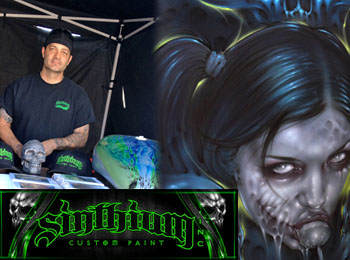
SINTHIUM CUSTOM PAINT
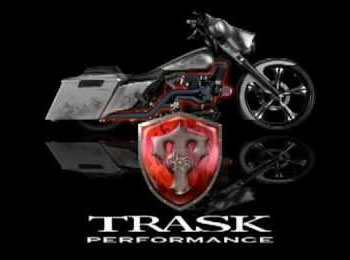
TRASK PERFORMANCE
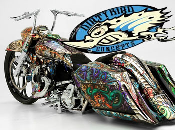
DIRTY BIRD DESIGNS
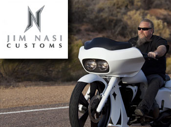
JIM NASI CUSTOMS
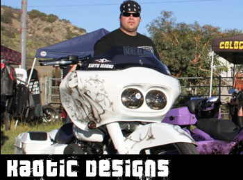
KAOTIC DESIGNS
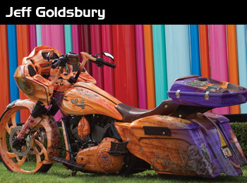
PRIVATE BUILDERS
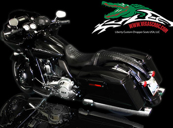
CUSTOM ACCESSORIES
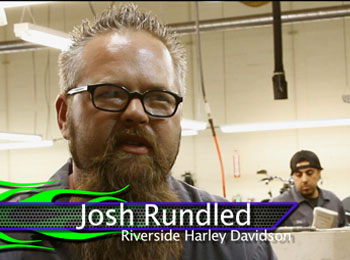
RIVERSIDE HARLEY DAVIDSON
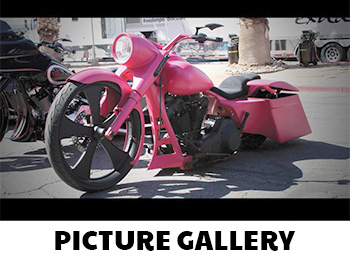
CLICK FOR GALLERY
10 YEARS ON
Get Ready For The Ride Of A Lifetime
From the masterminds behind Inspire and Bagged & Tagged I - Executive Producers John D and Brian Bostwick (Majestic: The Nick Trask Story) with Joe Duenser — comes the highly anticipated sequel that takes custom bagger culture to a whole new level: Bagged & Tagged II - 10 Years On.
This film doesn't just showcase bikes. It's a high-octane journey through the evolution of custom baggers, featuring some of the most jaw-dropping, insane Harley Davidson builds ever created. But this isn't just about chrome and paint jobs. It's an inside look at the builders who pushed the limits, the legends who fell off the radar, and the new wave of custom bike creators taking the industry by storm.
Forget the shallow clichés of bikes, boobs, and beers — this is for the true performance-driven enthusiasts. Those who crave class, power, and a ride that commands attention with every rumbling rev.
Loud. Proud. Relentless. If you want a ride that doesn't just turn heads but owns the road, then this is your movie. Welcome to the next chapter of custom bagger history.
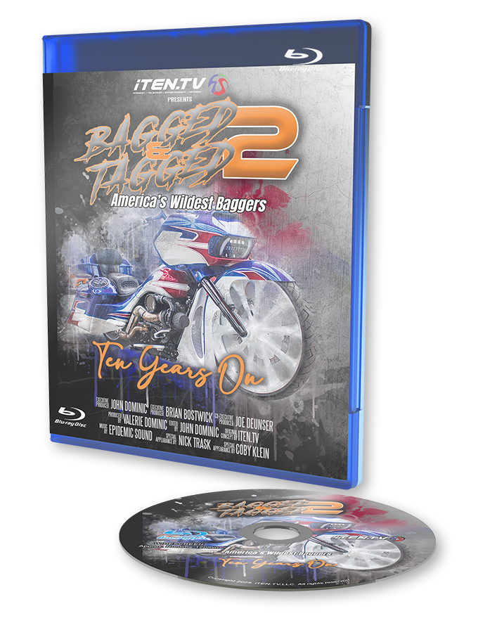
HIGHLIGHTS
NO FLUFF
his isn't some suit's idea of a “biker film.” It's created by true industry pros- people who live and breathe custom motorcycles. No fake drama. No reality TV nonsense. Just the real love, grit, frustration, and thrill of owning a custom bagger.
No endless slow-mo welding montages. No staged shouting matches. Just raw passion and real stories from the heart of the scene.
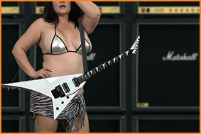
JUST AS LOUD AS THE FIRST FILM
The soundtrack on the first Bagged & Tagged film caught people off guard. It's not your typical Skynyrd-and-leather-cliché music - it hits harder than a crack in the nuts. It's dark, gritty, and untamed. It made riders feel like kings of the road, not just fans of the film.
This time, we're going even louder than before. No bubblegum pop. No softcore hip-hop. We're talking heavy-hitting outlaw country, industrial rock, and southern grit.
10 YEAR RE-UNION
Remember Veronica Mills? That smokin' hot cheerleader from high school that everyone wanted a piece of? Where is she now? Yeah... we don't give a damn either.
But hey, lets see how much things have changed. Who rose, who folded, who cashed in, and who burned out. Who’s running the game now, and who’s just faking it.
WHO'S IN THE FILM THIS TIME?
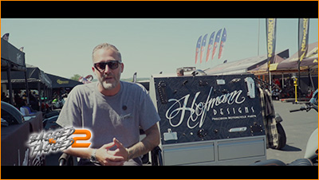
Curtis Hofmann - Hofmann Designs
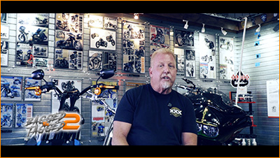
Paul Yaffe - Paul Yaffe Originals
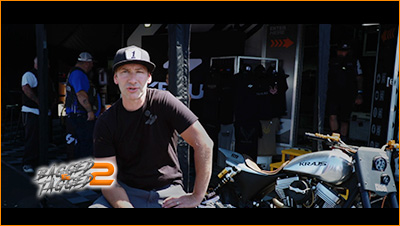
Satya Kraus - Krause Motor
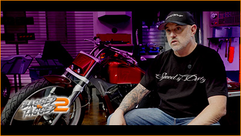
Coby Klein - Speed By Design
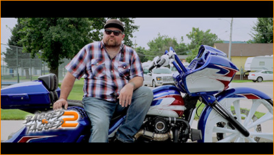
James Bonner - JBA Customs
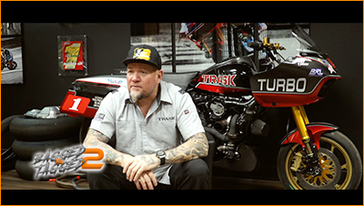
Nick Trask - Trask Performance
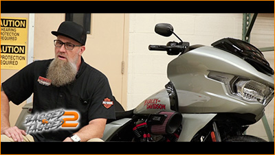
Justin B. Umbs - Superstition Harley
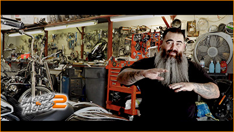
Marcos Mendieta - Inland Empire
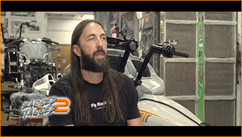
Kyle Coolings - Coonyz Customs
DOWNLOAD DIGITAL OFFER
OWN THE FILM - $9.99
Download Bagged & Tagged today and ride along with America's wildest bagger builders and riders.
From the studio that brought you the Bagged and Tagged Films - iTEN.TV
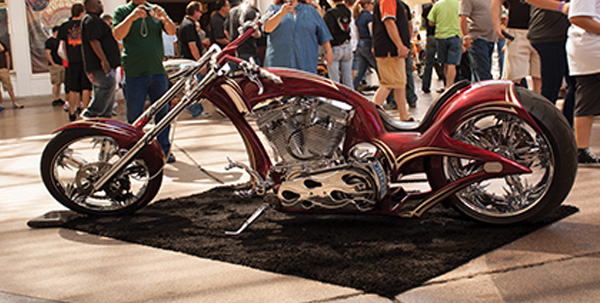
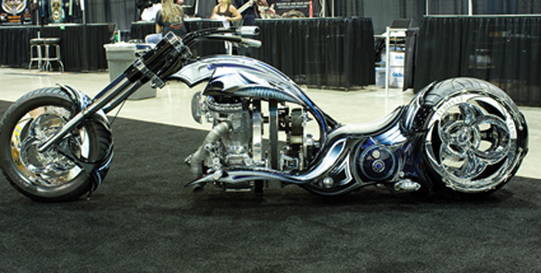
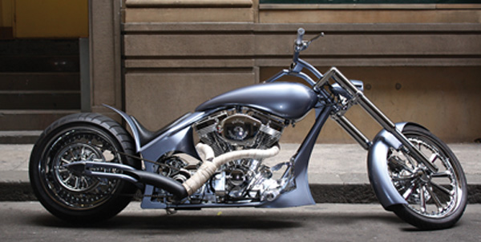
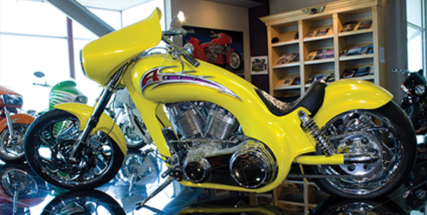
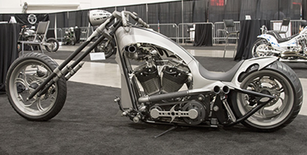
There was a time when the chopper was king. Long forks stretched toward the horizon, hand-fabricated frames, paint jobs that took months to lay down - every bike a rolling piece of art, built by hands that bled for it. Then the scene shifted. Baggers rolled in with their stereo systems and their five minutes in the spotlight, and the chopper world did what it's always does best: it went quiet, went underground, and kept building.
It never stopped. It just stopped asking for permission.
Now it's back - louder, meaner, and more creative than ever. Garages from coast to coast are turning out machines that blur the line between motorcycle and sculpture. A new generation of builders has picked up the torch, and the old guard is still out there proving the game was never over. The chopper scene isn't having a comeback. It's having a reckoning.
CHOPPER VISION is where you watch it happen.
From the team behind the Bagged and Tagged series, iTEN.TV is going all-in on the culture that started it all. This isn't a nostalgia piece. This is a front-row seat to the builders, the shops, the rallies, and the rides that are dragging the chopper scene back into the light - captured the way only iTEN.TV knows how to shoot it: raw, real, and right up close.
Every episode puts you in the shop at 2 AM when a deadline's looming and a frame still needs to be raked. It puts you on the back roads when a first ride either validates six months of work or sends someone back to the drawing board. It puts you at the shows where builders don't just show up - they throw down, bike to bike, ego to ego, for bragging rights that actually mean something in this world.
We've got the archive to back it up - thousands of photos and hours of footage that live and breathe this culture, and we're just getting started. Chopper Vision is built to run: season after season of builds, riders, rivalries, and the kind of two-wheeled insanity that made this scene legendary in the first place. Not setup make believe drama!
The baggers had their moment. Now it's time to remember who built this culture from the frame up.